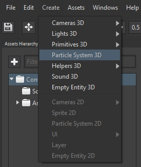

Goal
Have you ever seen an explosion in a video-game? Such is surely done with particles. Those allow us to give dynamism to a game by creating good-looking effects.
Whitin this recipe you will learn how to create a 3D particles system in your game, both from Wave Visual Editor or your favorite IDE; and how to customize its looking to fit your effect needs.
Hands-on
With Wave Visual Editor
Once you have a project opened in Wave Visual Editor, under Create menu item choose Particle System 3D:

At the right side, within Entity Details, you will find a set of properties which will define the way our particles will work:
- AlphaEnabled: whether allow transparency in particles or not.
- Bounciness: when CollisionBehavior is set to bounce, it defines particles' amount of bounciness.
- CollisionBehavior: what happens on collision: bounce or die.
- CollisionMin/CollisionMax: ends which define a bounding box to detect collisions between particles.
- CollisionSpread: direction a particle will take after colliding.
- CollisionType: limits bounding box defined in CollisionMin/CollisionMax will have: none, min. X, max. X, min. Y, max. Y, min. Z or max. Z.
- Emit: whether to actually emit particles or not.
- EmitRate: particles emitted per second.
- EmmiterShape: the shape the emiter will have: rectangle (its edges), filled rectangle, circle (its perimeter) or filled circle.
- EndDeltaScale: scale the particle will have just before dying.
- Gravity: direction and strength of the gravity effect.
- InitialAngle: the one each particle will begin with.
- LinearColorEnabled: whether it is allowed particles to change their color.
- LocalVelocity: space the particles will move in X, Y and Z axes.
- MinColor/MaxColor: color range particles can go through.
- MinLife/MaxLife: minimum and maximum, respectivelly, live time on each particle.
- MinRotateSpeed/MaxRotateSpeed: minimum and maximum, respectivelly, rotation speeds for each particle.
- MinSize/MaxSize: minimum and maximum, respectivelly, size each particle can have.
- NumParticles: maximum amount of particles generated at same time.
- RandomVelocity: velocity spent randomly on particles (independent between those).
For instance, here we have tried to mimic the snow falling from a cloudy and dark sky:

With Visual Studio (for Windows or Mac)
Add the following lines to your Scene class -where you can find above the description for all of ParticleSystem3D properties:
var particles = new Entity("Particles")
.AddComponent(new Transform3D())
.AddComponent(new ParticleSystem3D()
{
Emit = true,
NumParticles = 200,
EmitterShape = ParticleSystem3D.Shape.FillRectangle,
EmitterSize = new Vector2(10.0f, 10.0f),
EmitRate = 100.0f,
LocalVelocity = new Vector3(0.0f, -0.04f, 0.0f),
RandomVelocity = new Vector3(0.01f, 0.05f, 0.01f),
Gravity = Vector3.Zero,
InitialAngle = 0.0f,
MinRotateSpeed = 0.0f,
MaxRotateSpeed = 10.0f,
MinSize = 0.05f,
MaxSize = 0.2f,
EndDeltaScale = 0.0f,
MinLife = 1.0f,
MaxLife = 2.0f,
LinearColorEnabled = false,
AlphaEnabled = true,
CollisionType = ParticleSystem3D.ParticleCollisionFlags.None
})
.AddComponent(new ParticleSystemRenderer3D())
.AddComponent(new MaterialsMap());
this.EntityManager.Add(particles);
Wrap-up
We have learned how to add a 3D particles system, and which are the most relevant properties to customize it.